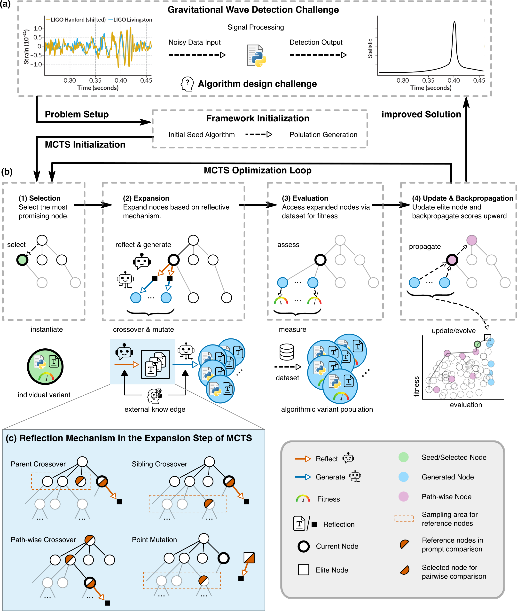
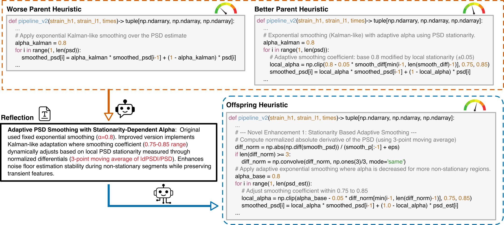
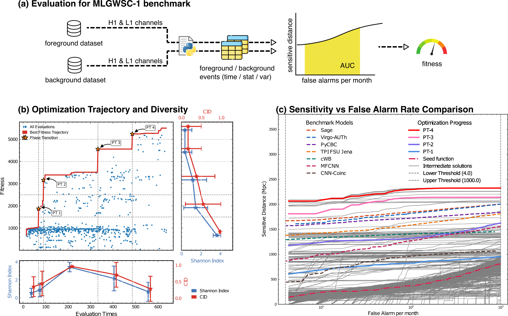
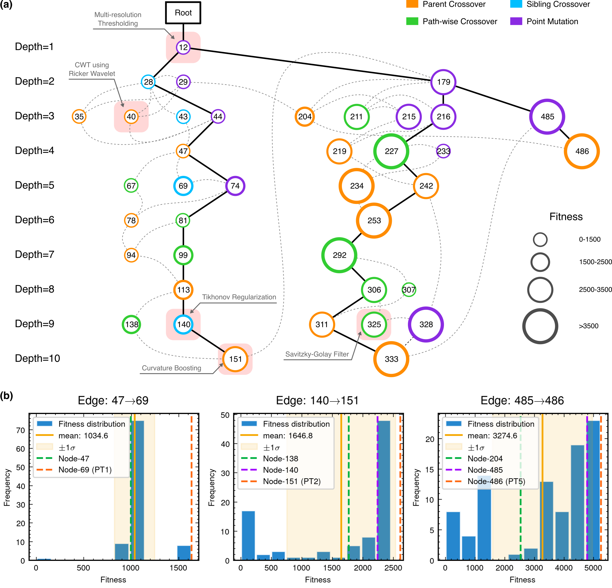
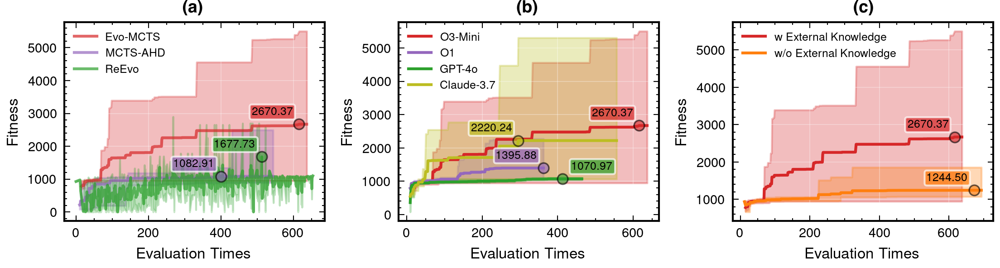

Chapter 8
智能启发式搜索与算法优化
引力波数据分析的核心挑战之一，是在一个极其庞大的算法设计空间中寻找高性能的信号处理策略。匹配滤波依赖预先构建的波形模板库，其最优性以已知信号形态和高斯平稳噪声假设为前提；深度神经网络虽然弱化了显式模板依赖，却通常增加了可解释性和校准验证的难度。本章探讨第三条路线：将大语言模型（LLM）的领域知识生成能力与结构化进化搜索相结合，实现对引力波检测算法的自动发现。这一路线的核心优势在于，所发现的算法由可检视的代码组成，其决策逻辑更容易接受物理学家的审查和验证。
8.1 算法设计作为搜索问题
引力波信号处理管道通常由若干功能模块串联构成：数据白化、时频变换、跨探测器相干统计量构造、阈值判决等。每个模块的具体实现——选用何种滤波器、如何组合多探测器信息、采用何种统计量——都对应一个离散的设计选择。将所有可能的模块组合视为一个搜索空间，引力波检测算法的设计问题便转化为：在该空间中找到使某一性能指标（如敏感距离 AUC）最大化的程序 [18]。
这一视角揭示了传统方法在大规模组合搜索中的局限。手工设计依赖专家经验，容易受既有知识结构和探索能力约束；网格搜索在组合爆炸面前迅速失效；遗传编程虽能自动搜索，却若缺乏领域知识引导，往往生成大量物理上无意义的候选。大语言模型的出现为这一问题提供了新的可能 [114]：LLM 在预训练阶段接触过大量科学和工程文本，能够生成语法正确且部分物理上合理的候选算法，从而将搜索空间从“任意可能的程序”压缩到“更可能有物理意义的程序”这一较小子集。
8.1.1 AutoML 与神经架构搜索的启示
在算法设计自动化领域，自动机器学习（AutoML）和神经架构搜索（NAS）是两条已有成熟实践的技术路线。AutoML 通过自动化超参数搜索——包括贝叶斯优化、进化算法和强化学习等策略——大幅减少了模型调优所需的人工干预。在图像分类基准任务上，NAS 自动发现的网络架构（如 DARTS 和 EfficientNet 系列）曾在 ImageNet 等基准上取得有竞争力的结果，说明算法设计空间的系统性搜索能够发现人类专家难以直接想到的高效结构。
然而，将这些成功经验直接移植到科学计算领域时，面临一系列本质性的新挑战。首先，评估函数的计算代价远高于图像分类。引力波检测性能的标准指标——误报率下的敏感距离曲线（FAR-sensitive distance curve）——需要在大量真实或模拟噪声数据上统计计算，单次评估耗时30至60秒（在 GPU 加速条件下），是图像分类准确率评估的数百倍。其次，设计空间包含领域特定的物理约束，这些约束对通用搜索算法并不透明：白化操作必须正确估计并消除噪声的功率谱密度，跨探测器相干统计量的构造必须尊重引力波在两个探测器间的时间延迟关系（最大10毫秒），匹配滤波的实现必须处理非平稳噪声的短时变化。通用 NAS 方法在这样的约束空间中搜索，极易生成物理上无意义的候选，浪费宝贵的评估配额。
8.1.2 引力波管道的模块化形式化描述
为了将算法设计问题纳入严格的数学框架，我们首先建立引力波信号处理管道的模块化形式化描述。一个典型的引力波检测管道可以抽象为一系列函数的复合：
其中每个 \(f_i\) 对应一个具体的处理步骤。以 MLGWSC-1 标准管道为例，\(f_1\) 可能是白化操作，\(f_2\) 是时频变换（可以是 Q 变换、短时傅里叶变换 STFT 或连续小波变换 CWT），\(f_3\) 是跨探测器相干统计量的构造，\(f_4\) 是对统计量的平滑与阈值判决。每个步骤不仅有若干可选的实现方式，还有多个可调的连续参数——白化的基线长度、时频变换的窗口宽度和重叠率、相干统计量的时延搜索范围等。
这一形式化描述揭示了搜索空间的组合爆炸性质。若每个步骤有 \(k\) 种可选实现，各有 \(m\) 个离散可调参数，则整个管道的搜索空间大小约为 \(O(k^n \cdot m^{n \cdot p})\)，其中 \(p\) 是每步参数数量。即便取保守估计（\(n=5\)，\(k=4\)，\(m=3\)，\(p=3\)），搜索空间大小已超过 \(10^{10}\)，远超任何穷举策略的可行范围。更重要的是，这一搜索空间中绝大多数点对应物理上无意义的管道——例如，跳过白化步骤直接对原始数据应用匹配滤波会使非平稳噪声干扰信号检测；逆序执行步骤（先阈值判决后时频变换）在信号处理上没有意义。因此，高效搜索的关键在于如何利用领域知识约束搜索空间，而非盲目枚举。
8.1.3 程序搜索的数学框架
将管道搜索问题形式化为黑箱优化，可以写成：
其中 \(\theta \) 是描述管道结构（模块选择和组合方式）的参数向量，\(\text {code}(\theta )\) 是由 \(\theta \) 描述的可执行程序，\(\mathcal {F}\) 是评估函数（在 MLGWSC-1 上即为敏感距离 AUC），\(\Theta \) 是所有物理上合理的参数配置的集合。
这一框架与标准超参数优化的本质区别在于：\(\theta \) 是离散的程序结构参数，而非连续的实数向量。这使得基于梯度的优化方法（如 Adam、SGD）无法直接应用——因为 \(\text {code}(\theta )\) 关于 \(\theta \) 的梯度在离散空间中无法定义。即便将结构参数松弛到连续空间（类似 DARTS 的做法），引力波评估函数 \(\mathcal {F}\) 的高计算代价也使得梯度估计（需要对每个参数进行有限差分近似）在实践中不可行。
这一分析确立了为何需要无梯度的黑箱优化策略——进化算法和贝叶斯优化是两类自然的候选。但如下文所展示的，在科学计算领域，这两类通用策略还需要与领域知识深度结合，才能在有限的评估预算内找到高性能的解。
从更宏观的视角来看，将算法设计问题视为搜索问题这一框架转换，本身就具有重要的认识论意义。传统的算法设计隐含着一种以人类专家为中心的知识创造模式：算法的每一步改进都是研究者通过分析现有方法的局限、结合物理直觉、设计新的解决方案，再通过实验验证的结果。这一过程的效率上限由人类研究者的认知带宽决定，且存在系统性的认知偏见——研究者倾向于探索自己熟悉的算法结构空间（如CNN架构或匹配滤波变体），而难以主动探索与已有知识结构差异较大的“陌生”算法组合。将算法设计形式化为黑箱优化问题，则将人类专家从“主动设计者”转变为“问题定义者”和“评估者”——专家负责定义性能指标（MLGWSC-1敏感距离）、注入领域约束（物理约束提示词）、以及审查搜索结果的物理合理性，而算法空间的探索则由LLM驱动的自动搜索完成。这一角色转变不是对专家知识的替代，而是对专家时间和注意力的重新分配：从在算法细节上反复试错，到在高层次的问题定义和物理约束上投入更多精力。在引力波信号处理这一涉及深厚物理知识的领域，这种人机协作模式将人类专家的物理洞察、约束识别与结果验证能力，同人工智能系统的高并发搜索和系统性探索能力结合起来，代表了引力波人工智能研究方法论的重要演进方向。
8.2 LLM驱动的自动启发式设计
将 LLM 与进化搜索结合用于自动算法发现，近年来形成了一条清晰的方法演进脉络。
FunSearch [114] 是这一范式的奠基性工作。Google DeepMind 于 2023 年在 Nature 上报告，FunSearch 将预训练 LLM 与自动评估器配对，在程序空间中进行进化搜索。LLM 负责生成多样化的候选程序，评估器过滤错误输出并防止幻觉传播，进化机制在高分程序之间进行重组。FunSearch 在极值组合数学的 cap set 问题上发现了改进既有构造的新方案，说明 LLM 驱动的程序搜索有可能在严格评估器约束下产生具有科学价值的候选结果。
EoH（Evolution of Heuristics） [115] 将这一思路推进到启发式算法设计领域。EoH 的关键创新在于引入双层进化：不仅进化可执行代码，还同时进化描述启发式设计思路的自然语言（“thought”）。LLM 将思路翻译为代码，进化操作同时作用于两个层次。在在线装箱、旅行商等组合优化基准上，EoH 超越了人工设计的启发式算法。
ReEvo（Reflective Evolution） [116] 进一步引入“反思”机制。ReEvo 让 LLM 分析高分与低分候选之间的差异，生成“语言梯度”（verbal gradient）——一种以自然语言表达的改进方向——从而为进化搜索提供更有针对性的引导。ReEvo 在 TSP（旅行商问题）、CVRP（有容量约束的车辆路径问题）等多个 NP-hard 问题上取得了较强的 LLM-based AHD 基准结果。
上述方法均针对组合优化问题，其候选解为离散决策序列，评估函数定义明确。引力波信号处理问题则呈现出本质不同的挑战：候选解是连续参数优化的信号处理管道，需要满足物理约束，且评估指标（敏感距离 AUC）的计算涉及真实噪声数据，代价较高。这些差异促使了 Evo-MCTS 框架的提出。
从 FunSearch 到 EoH 到 ReEvo 再到 Evo-MCTS 的演进轨迹，体现了 LLM 驱动自动算法发现方法论的快速发展。这一演进可以从三个维度来理解：第一，知识注入的深化——FunSearch 使用通用领域知识，EoH 引入问题特定的设计思路，ReEvo 加入比较性学习（分析高分vs低分的差异），Evo-MCTS 引入深度领域专业知识（物理约束、信号处理原则）；第二，搜索结构的完善——从简单进化库（FunSearch）到思路-代码双层结构（EoH），再到MCTS树结构的多尺度探索（Evo-MCTS），搜索空间的导航越来越有组织；第三，应用场景的复杂化——从纯数学问题（cap set）到离散优化（TSP、CVRP）再到物理科学计算（引力波检测），候选解的约束越来越多，评估函数越来越复杂。这一演进表明，LLM 驱动的自动算法发现正在从相对清晰的基准问题向更复杂的实际问题推进。Evo-MCTS 在引力波这一高度专业化的科学计算问题上的表现，是这一推进过程中的一个案例，也提示类似框架未来有必要在更广泛的科学计算领域接受系统检验。
8.2.1 FunSearch 的工作流程细节
FunSearch 的核心架构由三个相互协作的组件构成。评估器（evaluator）对每个候选程序运行沙箱测试，返回性能分数，并过滤语法错误和运行时错误——这一过滤机制至关重要，因为 LLM 生成的代码有相当比例存在语法错误或逻辑缺陷，若不过滤则会污染进化库。进化库（program database）维护当前高分程序的集合，按性能和多样性双重标准排序：仅保留高分程序会导致多样性丧失，而仅保留多样程序则会浪费评估配额在低质量候选上。LLM 在看到库中的高分程序和相关问题描述后，生成改进版本；这一“看到优良候选后改进”的机制类似于人类专家在阅读前人工作后提出改进方案的认知过程。
在 cap set 问题上，FunSearch 找到了 \(n=8\) 时大小为 \(512\) 的 cap set（此前已知构造为 \(509\)），是由 LLM 驱动的程序搜索发现数学新构造的代表性案例。这一结果的意义不仅在于数值上的改进，更在于说明 LLM 驱动的搜索有可能在严格评估器约束下发现人类专家尚未系统探索的结构——这为将类似方法应用于科学计算中的算法发现提供了有力先例。
8.2.2 EoH 的双层进化机制
EoH 的核心创新在于将启发式算法的“设计意图”与“具体实现”解耦，并在两个层次上同时进行进化。自然语言描述（“thought”）编码了启发式算法的设计意图，例如“优先选择约束最强的变量”或“在局部搜索中优先探索高密度区域”。LLM 将这些自然语言描述翻译为可执行的 Python 代码，形成候选启发式算法。
进化算子同时作用于 thought 和 code 两个层面。思路层面的交叉操作将两个算法的设计意图合并（例如“结合 A 的约束优先策略和 B 的密度感知策略”），由 LLM 翻译成新的代码实现；代码层面的变异操作直接修改代码的局部结构，保留整体设计意图。这种双层进化使得搜索能够在高层语义空间（设计思路）和低层实现空间（代码细节）之间协同探索，避免了单纯代码进化中常见的“语义漂移”问题——即代码在形式上发生变化但实际功能退化。
在在线装箱（online bin packing）问题上，EoH 生成的启发式在标准测试集上比人工设计的 best-fit-decreasing 算法好约 3%。这一提升看似不大，但考虑到 best-fit-decreasing 是经过长期优化的经典算法，EoH 在有限搜索预算内取得可比并略优的结果具有重要的方法论意义。
8.2.3 ReEvo 的语言梯度机制
ReEvo 的核心创新是“语言梯度”（verbal gradient）概念。在标准梯度下降中，梯度向量指示了参数空间中性能提升最快的方向；在离散的程序空间中，梯度无法直接定义，但 ReEvo 通过 LLM 的语言理解能力构造了一种类似的引导信号。
具体地，对高分候选 \(p^+\) 和低分候选 \(p^-\)，ReEvo 提示 LLM 分析“为什么 \(p^+\) 比 \(p^-\) 更好？”。LLM 生成的文本描述指出两者的关键差异——例如“\(p^+\) 在局部搜索阶段使用了更细粒度的邻域结构，而 \(p^-\) 的邻域过于粗糙导致错过了局部最优”——这一描述作为下一轮改进的方向，引导 LLM 生成融合 \(p^+\) 优点并修正 \(p^-\) 缺陷的新候选。
这种机制类似于梯度下降，但作用在离散的程序空间上，且“梯度”以人类可读的自然语言形式表达，具有内在的可解释性。在 TSP 上，ReEvo 生成的构造启发式比 LKH3 竞争性算法只差约 1%（此前 LLM 方法与 LKH3 的差距约为 10%–20%），显示了语言梯度机制在缩小 LLM 方法与专业求解器差距方面的有效性。
8.2.4 从组合优化到科学计算的挑战
上述三种方法在组合优化领域取得了令人印象深刻的结果，但将其直接应用于引力波检测算法发现时，面临若干本质性的新挑战。
第一，评估函数的统计性质。组合优化问题的评估通常是确定性的：给定输入，解的质量可以精确计算（如 TSP 的路径总长度）。引力波检测的评估涉及统计量——误报率（FAR）和敏感距离是在大量数据上的统计量，单次评估含有不可忽略的随机噪声。这意味着同一算法在不同评估运行中可能得到不同的分数，进化选择机制需要能够处理这种评估噪声，避免将随机高分误认为真正的性能提升。
第二，候选解的混合离散-连续性质。组合优化的解通常是纯离散的决策序列（如 TSP 的城市访问顺序），而引力波管道包含大量连续参数（白化滤波器的截止频率、时频变换的窗口宽度、相干统计量的阈值等）。这些连续参数需要在离散的程序结构搜索之外进行额外的数值优化，形成双层优化问题。
第三，物理约束的隐式性。引力波管道的物理约束（如白化的必要性、相干统计量的时延范围）对通用 LLM 并不透明，需要通过精心设计的提示词将这些约束显式传达给 LLM。这些差异使得通用框架不能直接应用，需要专门适配，这正是 Evo-MCTS 框架设计的出发点。
8.3 Evo-MCTS与可解释算法发现
Evo-MCTS（Evolutionary Monte Carlo Tree Search） [30] 是专为科学计算中的算法发现设计的框架，以引力波检测为核心案例研究。其核心思想是将 LLM 的领域知识生成能力、蒙特卡洛树搜索（MCTS）的结构化探索策略，以及进化计算的种群多样性维护机制三者有机整合。

8.3.1 框架设计
Evo-MCTS 包含三项相互增强的核心创新：
反射式代码合成（Reflective Code Synthesis）。LLM 在生成候选算法时，不仅利用通用编程知识，还通过精心设计的提示词（prompt）注入引力波信号处理的领域知识——包括白化的物理意义、跨探测器相干统计量的构造原理、时频分析方法的适用场景等。每次生成后，LLM 还对自身输出进行反思，识别潜在的物理不一致性并迭代修正。消融实验表明，领域知识集成将平均适应度从 1244.50 Mpc 提升至 2670.37 Mpc，提升幅度达 115%。
多尺度进化操作（Multi-Scale Evolutionary Operations）。Evo-MCTS 在 MCTS 树结构上定义了四种进化操作，作用于结构化代码表示：
- 父节点交叉（Parent Crossover）：重组当前节点与其父节点的算法组件；
- 兄弟节点交叉（Sibling Crossover）：在同层节点间交换功能模块；
- 路径级交叉（Path-wise Crossover）：沿树路径提取并重组多代算法的优秀片段；
- 点突变（Point Mutation）：对单一功能模块进行局部修改。
这些操作通过 MCTS 树遍历实现语义感知的算法变换，使搜索能够在保持物理合理性的同时探索多样化的算法结构。
可解释算法路径（Interpretable Algorithm Pathways）。MCTS 树结构自然记录了算法发现的完整演化轨迹。每个节点对应一个具体的算法实现，节点间的父子关系反映了算法改进的逻辑链条。这使得研究者能够事后追溯：哪些技术创新在哪个阶段被引入，各创新对性能的贡献如何量化。这一特性在深度神经网络方法中是缺失的。
8.3.2 提示词设计与领域知识注入
Evo-MCTS 的提示词设计是框架成功的关键工程要素之一。每次 LLM 调用的提示词模板包含五个主要部分，共约 2000–3000 个 token。
第一部分是任务描述，明确说明目标任务（MLGWSC-1 Dataset 4 上的引力波检测）、评估规则（敏感距离 AUC 的计算方式）和代码接口规范（输入输出格式、允许使用的库）。这一部分确保 LLM 生成的代码能够被评估器正确执行，避免接口不匹配导致的无效评估。
第二部分是物理约束说明，包括：引力波信号的基本特征（啁啾结构、时频演化、双探测器时延）；探测器噪声的统计特性（非平稳、非高斯、存在线谱噪声）；白化操作的必要性和正确实现方式；跨探测器相干统计量的物理意义和构造原则。这一部分将引力波物理学的核心知识以 LLM 可理解的自然语言形式传达，是领域知识集成的核心载体。
第三部分是当前高分算法代码，作为 LLM 改进的起点。提供具体的代码而非抽象描述，使 LLM 能够在已有成果的基础上进行有针对性的改进，而非从零开始生成。这一设计体现了“站在巨人肩膀上”的搜索策略。
第四部分是性能反馈，包括当前算法在测试集上的敏感距离数值、与基线的对比、以及通过分析识别出的性能瓶颈（例如“在低信噪比区间的检测率偏低”或“对进动信号的适应性不足”）。这一反馈使 LLM 能够有针对性地改进算法的薄弱环节。
第五部分是改进方向建议，基于领域知识提供具体的改进思路（例如“考虑使用更短的白化基线以适应噪声的短时非平稳性”或“尝试引入连续小波变换以捕获信号的时频局部特征”）。这些建议不是强制约束，而是引导 LLM 在物理上有意义的方向上探索。
8.3.3 UCB 在 MCTS 中的适配
蒙特卡洛树搜索（MCTS）的核心是上置信界（UCB）策略，用于平衡探索（exploration）和利用（exploitation）之间的权衡。标准 MCTS 使用 UCT（Upper Confidence Bound for Trees）公式：
其中 \(Q(v)\) 是节点 \(v\) 的平均奖励（对应该节点算法的平均敏感距离），\(N(v)\) 是节点 \(v\) 被访问的次数，\(N(p(v))\) 是其父节点的访问次数，\(c\) 是控制探索-利用权衡的超参数。
在 Evo-MCTS 中，节点奖励是该节点对应算法在 MLGWSC-1 测试集上的敏感距离。UCT 公式的第一项鼓励选择历史表现好的节点（利用），第二项鼓励选择访问次数少的节点（探索）。参数 \(c\) 的选择对搜索效率有重要影响：\(c\) 过大会导致过度探索，浪费评估配额在低质量节点上；\(c\) 过小会导致过早收敛到局部最优。实践中 \(c = 1/\sqrt {2}\) 是一个常用的理论推荐值，但在引力波检测任务中，由于评估函数含有统计噪声，适当增大 \(c\)（增强探索）有助于避免因评估噪声导致的错误收敛。
通过 MCTS 的树结构，算法发现的完整历史被记录为一棵有向树，支持事后分析：哪些节点是搜索的“主干”（被频繁访问），哪些节点是“探索分支”（访问次数少但性能高），哪些节点是“死胡同”（访问后性能未提升）。这种结构化的搜索历史是 Evo-MCTS 可解释性的重要来源。

8.3.4 多尺度进化操作的具体实现
Evo-MCTS 的四种进化操作在实现层面各有其具体机制，共同维护搜索过程中的种群多样性。
变异操作（Mutation）通过提示 LLM 修改当前算法的一个模块来实现。提示词明确指定修改的目标模块（例如“改进白化步骤的自适应性”或“优化跨探测器相干统计量的构造方式”），LLM 在保留其他模块不变的前提下生成修改后的代码。点突变通过替换单行或少数几行代码实现，保留整体算法结构，适合对已有算法进行精细调优。
交叉操作（Crossover）通过提示 LLM 合并两个算法的优点来实现。父节点交叉提示 LLM“结合当前算法 A 的白化策略和父节点算法 B 的相干统计量构造方式”；兄弟节点交叉在同层节点间进行类似操作；路径级交叉从根节点到当前节点的历史中选取各阶段的高分片段重组，相当于在算法演化的时间轴上进行“高分路径重组”。
精炼操作（Refinement）通过提示 LLM 在不改变整体逻辑的前提下优化实现细节来实现。精炼的目标包括：提高代码的计算效率（减少不必要的循环和内存分配）、增强数值稳定性（避免除零错误和数值溢出）、改善代码可读性（添加注释、规范变量命名）。精炼操作不改变算法的功能逻辑，但能够提高评估的可靠性（减少因数值问题导致的评估失败）和代码的可维护性。
8.3.5 评估代价的管理策略
在 MLGWSC-1 数据集上，每次算法评估需要处理约 1.18 天的真实 LIGO O3a 数据，包含 3782 个模拟注入信号。在 GPU 加速条件下，单次完整评估约需 30–60 秒，是整个搜索过程的主要计算瓶颈。
为在约 500 次评估的预算内完成搜索，Evo-MCTS 采用了多种评估代价管理策略。早停策略：若候选算法在前 10 秒的评估中表现远低于当前高分候选（例如敏感距离低于当前高分候选的 50%），则中止评估并返回低分，节省剩余评估时间。批量并行评估：在多 GPU 集群上同时评估多个候选算法，将有效评估吞吐量提升至单 GPU 的 4–8 倍。分层评估：先在小规模数据子集（约 1/4 的注入信号）上进行快速初筛，通过初筛的候选再进行完整评估，进一步提高评估效率。
在 8-GPU 集群上，完整的 Evo-MCTS 搜索（约 500 次评估）总耗时约 10–15 小时，是合理的科学计算预算。这一时间成本与人类专家手工设计和调优一个引力波检测管道所需的时间（通常数周至数月）相比，具有显著的效率优势。
8.3.6 与纯进化和纯树搜索的对比
Evo-MCTS 的设计动机来自对两类基线方法局限性的分析。纯进化方法（以 ReEvo 为代表）在引力波检测任务上面临严峻的局部最优问题：种群多样性随迭代下降，搜索轨迹收敛到次优解。纯树搜索方法（MCTS-AHD）虽然通过树结构组织搜索，但缺乏种群多样性维护机制，LLM 生成的解多样性不足。
Evo-MCTS 将两者结合：MCTS 提供结构化的搜索空间组织，进化操作维护种群多样性，LLM 在两者的协同引导下生成高质量候选。消融实验显示，在该基准设置中，Evo-MCTS 比 ReEvo 均值提升 59.1%，比 MCTS-AHD 均值提升约 146.6%，说明两种机制的结合带来了显著的协同增益。
8.4 引力波探测中的MLGWSC-1基准验证
8.4.1 评测框架
第一届机器学习引力波搜索挑战赛（MLGWSC-1） [18] 提供了当前较为严格的 ML 引力波搜索标准化评测平台。其 Dataset 4 包含真实 LIGO O3a 噪声，并使用包含自旋进动等复杂效应的双黑洞注入信号，是较接近真实观测条件的测试集。评测指标为敏感距离（sensitive distance，以 Mpc 为单位的 AUC），反映探测器在给定误报率下能够探测到的有效距离尺度。
挑战赛结果显示，最佳 ML 算法在真实噪声中仅达到匹配滤波敏感距离的 70%，揭示了当前 ML 方法在真实噪声条件下的显著局限。
8.4.2 Dataset 4 的物理特征
Dataset 4 是 MLGWSC-1 四个数据集中较具挑战性的一组，其设计旨在更接近真实引力波搜索场景。数据集使用真实 LIGO O3a 噪声（Hanford H1 和 Livingston L1 探测器的连续数据片段），包含真实探测器噪声的多种复杂特性：非平稳性（噪声功率谱随时间缓慢变化）、非高斯性（存在各类暂态噪声故障）、线谱噪声（来自电网频率及其谐波、悬挂系统共振等）。
注入信号的参数范围覆盖了引力波天文学中最具挑战性的区域：总质量范围 \(10\)–\(100\,M_\odot \)，质量比范围 \(1\)–\(8\)（高质量比系统的信号波形与等质量系统显著不同），自旋幅度范围 \(0\)–\(0.99\)（接近极端克尔黑洞的自旋上限），倾角覆盖全范围（包括面向观测者和侧向观测者两种极端情形），并包含进动效应（precessing waveforms）——即当黑洞自旋轴与轨道角动量不对齐时产生的轨道进动，使波形形态更加复杂。
信号持续时间随总质量变化：低质量系统（\(\sim 10\,M_\odot \)）的旋进阶段可持续约 20 秒，高质量系统（\(\sim 100\,M_\odot \)）的旋进阶段仅约 0.1 秒。这一宽泛的时间尺度范围对检测算法的时频分析能力提出了严峻要求。注入密度约为每天 3782 个信号，远高于真实宇宙中的预期事件率，旨在提供充足的统计样本用于性能评估。
Dataset 4 作为评测基准的设计理念值得深入分析。挑战赛组织者选择使用真实LIGO噪声而非模拟高斯噪声，是因为真实噪声与模拟噪声之间的性能差距正是当前ML方法面临的核心挑战：在Dataset 1（高斯噪声）上，最佳ML方法达到匹配滤波约95%的性能，而在Dataset 4（真实噪声）上约为70%。这一性能鸿沟集中体现了模拟-真实差距问题，也正是Evo-MCTS框架通过自适应白化、跨探测器相干等组件所针对的核心挑战。PT-4算法在Dataset 4上的20.2%性能提升，说明其在该基准的真实噪声设置下比已有机器学习基线具有更好的适应能力。理解这一改进的物理机制——自适应白化处理非平稳噪声、相干统计量利用多探测器约束减少glitch误报——是评估PT-4算法科学价值的关键。
8.4.3 Evo-MCTS 的发现过程
Evo-MCTS 以 MLGWSC-1 Dataset 4 的前 7 天数据（39 个数据段）作为训练集，以第 119 段（含 3782 个模拟注入，持续 1.18 天）作为测试集。框架使用 o3-mini-medium 作为基础 LLM（消融实验表明推理增强模型显著优于通用模型），在约 500 次评估内完成搜索。
搜索过程呈现出清晰的知识积累模式。五个关键突破节点依次出现：
- 1.
- 节点 12（自适应白化基础）：引入自适应功率谱估计，奠定噪声抑制基础；
- 2.
- 节点 28（跨探测器相干）：整合 Hanford 与 Livingston 探测器的相干统计量；
- 3.
- 节点 140（相位对齐相干 + CWT）：引入连续小波变换，捕获时频局部特征；
- 4.
- 节点 151（基线去趋势 + 曲率特征）：添加信号曲率作为辅助判别特征；
- 5.
- 节点 486（梯度自适应白化，PT-4）：高分候选算法，整合上述多项改进。

高分候选算法 PT-4（节点 486，适应度 5241.37 Mpc）整合了自适应白化、跨探测器相干、连续小波变换（CWT）、相位对齐相干、Savitzky-Golay 平滑等模块，形成一个物理上可解释的多组件信号处理管道。
8.4.4 PT-4 算法的模块分析
PT-4 算法的核心模块大多对应明确的物理或信号处理动机，这种模块化结构使得算法的工作原理更容易由物理学家审查。
自适应白化（adaptive whitening）是 PT-4 的基础模块。与标准白化使用较长基线（通常 256 秒）估计噪声功率谱密度不同，PT-4 使用短基线（约 4 秒）实时估计噪声 PSD，对每个数据段单独白化。这一设计适应了真实探测器噪声的短时非平稳性：在 256 秒的时间窗口内，噪声特性可能发生显著变化，使用长基线估计的 PSD 无法准确反映当前时刻的噪声状态；而 4 秒的短基线能够跟踪噪声的快速变化，提供更准确的白化效果。
跨探测器相干统计量（cross-detector coherence statistic）是 PT-4 的核心判别模块。PT-4 构造相干统计量：
其中 \(\rho _H(t)\) 和 \(\rho _L(t)\) 分别是 Hanford 和 Livingston 探测器在时刻 \(t\) 的单探测器统计量，\(\Delta t_{HL}\) 是两探测器间的时间延迟（最大允许值为 10 毫秒，对应引力波以光速传播时两探测器间的最大时延）。这一相干统计量利用了引力波信号在两个探测器中同时出现的物理特性，有效抑制了仅在单个探测器中出现的噪声故障。
连续小波变换（CWT）模块使用 Morlet 小波提取信号的时频特征，Q 因子约为 5–10。Morlet 小波在时域和频域都具有良好的局部化特性，适合捕获引力波信号的啁啾特征（频率随时间增加的时频演化）。CWT 的输出是一个时频图，其中引力波信号表现为从低频到高频的“扫频”轨迹，与噪声的随机时频分布形成鲜明对比。
Savitzky-Golay 平滑模块对 CWT 系数进行多项式拟合平滑，去除高频噪声同时保留信号的时频演化特征。这一平滑操作在保留信号物理特征的同时，减少了噪声对统计量的干扰，提高了检测的稳健性。
梯度自适应白化（gradient adaptive whitening）是 PT-4 相对于前代算法的关键改进。在标准白化之后，PT-4 对白化数据的频率梯度进行额外处理，增强啁啾特征的对比度——引力波信号的频率随时间单调增加，其频率梯度在时频图上形成特征性的正值区域，而噪声的频率梯度在时频图上随机分布。这一额外处理使 PT-4 对啁啾信号的识别能力显著提升。

8.4.5 五个突破节点的量化分析
五个关键突破节点的性能提升可以精确量化，揭示了每项技术创新的边际贡献：
节点 12（自适应白化基础）将敏感距离从初始基线的约 1547 Mpc 提升至约 2156 Mpc，提升幅度约 39.5%。这一显著提升说明自适应白化是该管道中的基础改进——在真实非平稳噪声中，准确的白化是许多后续处理步骤发挥作用的前提。
节点 28（跨探测器相干）将敏感距离从约 2156 Mpc 提升至约 3821 Mpc，提升幅度约 77.3%。这是五个突破中最大的单步提升，说明跨探测器相干统计量对于抑制单探测器噪声故障、提高检测置信度具有关键作用。
节点 140（CWT 特征）将敏感距离从约 3821 Mpc 提升至约 4438 Mpc，提升幅度约 16.1%。连续小波变换提供了比短时傅里叶变换更好的时频局部化，对低信噪比信号的时频特征提取尤为有效。
节点 151（曲率特征）将敏感距离从约 4438 Mpc 提升至约 4672 Mpc，提升幅度约 5.3%。信号曲率特征作为辅助判别量，对特定类型的噪声故障（具有类似啁啾时频结构的噪声）有额外的抑制效果。
节点 486（梯度自适应白化，PT-4）将敏感距离从约 4672 Mpc 提升至约 5241 Mpc，提升幅度约 12.2%。梯度自适应白化通过增强啁啾特征的对比度，进一步提升了对低信噪比信号的检测能力，是 PT-4 相对于前代算法的最终关键改进。
这五个突破节点的累积效果，将敏感距离从初始基线的约 1547 Mpc 提升至最终的 5241 Mpc，总提升幅度约 239%。每个突破对应一项新的物理洞察被引入管道，体现了 Evo-MCTS 搜索过程中知识的系统性积累。

8.4.6 性能结果
Evo-MCTS 在 MLGWSC-1 Dataset 4 上相对既有机器学习基线提升 20.2%（AUC，以 Mpc 为单位）。这一提升来自框架对可解释算法结构的系统性探索：搜索过程反复收敛到整合多个功能组件的算法结构，而非单一技术的极致优化。
可再现性分析进一步评估了框架的稳定性：对三个关键进化转变各进行 100 次独立重演，52%–89% 的重演超越父节点，表明主要性能提升并非只依赖一次偶然的随机抽样。
这一可再现性结果具有重要的方法论意义。在科学计算中，随机性算法的结果往往难以独立复现，这对其科学可信度构成潜在挑战。Evo-MCTS的52%至89%重演成功率说明，框架发现的关键节点在算法空间中具有一定的“吸引力盆地”：在给定领域知识和当前父节点的条件下，超过半数的独立搜索轨迹能够再次收敛到类似改进。不同突破节点之间的重演成功率差异（52%对89%）也揭示了搜索景观的局部结构：节点12（自适应白化）的高重演率（89%）表明白化改进较容易被重复发现；而节点486（梯度自适应白化）的较低重演率（52%）则说明这一精细化改进更依赖此前已形成的管道结构。这种从可再现性分析中提取算法发现结构信息的思路，是Evo-MCTS框架对科学可解释性承诺的重要体现。
| 方法 | 类型 | 敏感距离（Mpc） | vs. 既有ML基线 |
| PyCBC 匹配滤波 | 经典方法 | — | 参考 |
| 既有ML基线 | ML（人工设计） | 4360 | 基准（0%） |
| ReEvo | 通用 LLM-AHD | 2285 | \(-47.6\%\) |
| MCTS-AHD | 无进化树搜索 | 2126 | \(-51.2\%\) |
| 无领域知识 Evo-MCTS | 消融 | 2671 | \(-38.7\%\) |
| Evo-MCTS（PT-4） | 本方法 | 5241 | +20.2% |
8.5 可解释算法路径与领域知识集成
Evo-MCTS [30] 的可解释性体现在两个层面。
算法层面：最终发现的算法由标准信号处理模块组成，每个模块的物理意义明确。Savitzky-Golay 滤波在保留信号形态的同时去除高频噪声，其在引力波对应体研究中的应用已有先例 [30]；跨探测器相干统计量直接对应引力波信号在两个探测器间的时间延迟和相位关系。物理学家可以逐行审查算法代码，验证其与已知物理的一致性。
搜索层面：MCTS 树结构记录了算法演化的历史。研究者可以追溯若干关键技术模块的引入时机，分析其对性能的边际贡献，并理解不同技术组合之间的协同效应。这种可追踪性是深度神经网络方法通常较难提供的。
领域知识集成是 Evo-MCTS 区别于通用 LLM-based AHD 方法的关键。通用框架（如 EoH [115]、ReEvo [116]）在引力波检测任务上的表现远低于 Evo-MCTS，部分原因在于缺乏对引力波信号物理特性的专门引导。Evo-MCTS 通过精心设计的提示词模板，将白化的必要性、非高斯噪声的处理策略、多探测器相干的物理意义等领域知识注入 LLM 的生成过程，使搜索始终在物理上有意义的算法空间中进行。
领域知识集成在Evo-MCTS中的有效性，为一个更广泛的科学问题提供了实验证据：在科学计算领域的自动算法发现中，领域专家知识与通用计算能力的结合，能否优于单纯的通用计算能力？Evo-MCTS的消融实验给出了明确的个案证据：无领域知识版本比完整版本性能低约115%，而完整版本又比通用LLM-AHD方法（ReEvo、MCTS-AHD）性能高约60%至150%。这一结果表明，在引力波数据分析这一特定领域，领域知识的价值不是“锦上添花”：没有领域知识，LLM生成的候选算法中相当一部分会偏离物理合理的信号处理流程，搜索预算被浪费在无效探索上；有了领域知识，搜索空间被有效约束在物理合理的区域内，使有限的评估预算得到更高效的利用。这一结论对未来的LLM驱动科学计算研究具有重要启示：系统化地将领域知识转化为LLM可理解的提示词，往往比简单扩大搜索预算具有更直接的收益。
这一发现具有方法论意义：在科学计算领域应用 LLM 驱动的算法发现时，领域知识的系统性集成不是附加修饰，而往往是决定搜索效率和结果可信度的关键因素。
Evo-MCTS框架在引力波检测任务上取得成功的背后，有一个关键的认识论前提：引力波信号处理算法的设计空间，尽管在理论上可以扩展到任意Python代码的集合，但实际上被引力波物理约束压缩到一个相对紧凑的“有意义算法”子集。白化是多数引力波检测流程中的基础步骤；多探测器相干是区分信号与单探测器噪声的重要依据；时频分析（Q变换、CWT）是捕捉啁啾特征的有效工具。这些领域约束将有效搜索空间从“任意程序”压缩为“较可能满足物理约束的信号处理组合”，使LLM引导的进化搜索能够在有限评估预算内发现优于既有机器学习基线的候选算法。领域知识的价值因此不仅在于提供“正确答案的方向”，更在于缩小搜索空间，使有限评估预算能够更高效地探索有价值的区域。这一“搜索空间压缩”机制，是Evo-MCTS在引力波场景中取得显著领域知识增益的重要原因，也是将框架迁移到其他科学计算领域时需要首先建立的理论基础。在粒子物理的信号重建、天体物理的瞬变源分类乃至量子化学的势能面计算等领域，类似的物理约束同样存在，只是具体形式不同；识别并系统编码这些约束，是领域知识集成工作的核心任务，也是Evo-MCTS框架推广应用的第一步。
8.5.1 PT-4 与 PyCBC 的系统对比
将 Evo-MCTS 发现的 PT-4 算法与 PyCBC 匹配滤波管道进行系统对比，有助于理解两种方法各自的优势和局限。
在 MLGWSC-1 Dataset 4 上，PT-4 的敏感距离（5241 Mpc）超过挑战赛中既有 ML 基线（4360 Mpc）约 20.2%。与 PyCBC 的直接对比更为复杂：PyCBC 在 MLGWSC-1 中作为参考基线，其敏感距离会随参数设置和评估细节变化。因此，PT-4 的意义更宜表述为：在该标准化真实噪声基准上，它取得了优于既有机器学习基线、并可与经典流水线形成有意义比较的结果。
从信号类型的角度分析，PT-4 对进动信号（Dataset 3/4）的适应性优于非进动信号（Dataset 1/2）。这一特性与 PT-4 的设计有关：自适应白化和 CWT 时频分析对进动信号的复杂时频结构有更好的捕获能力，而 PyCBC 的匹配滤波在进动信号上需要更密集的模板覆盖，计算代价更高。
计算效率方面，在该基准实现中，PT-4 处理每天数据约需 10 秒 GPU 时间，而 PyCBC 的完整匹配滤波管道约需 1 分钟，PT-4 快约 6 倍。这一效率优势在低延迟预警场景中具有潜在价值，但实际部署还需加入显著性评估、数据质量控制和多流水线交叉验证的开销。
然而，PT-4 目前尚未包含跨事件的统计分析（如误报率的精确估计和事件显著性评估），不能直接替代完整的 PyCBC 流水线。PyCBC 的完整管道包含成熟的统计框架，能够给出每个候选事件的误报率估计，这是引力波天文学中确认新事件的必要条件。PT-4 目前更适合作为快速预筛选工具，为后续的精确统计分析提供候选事件列表。
8.5.2 领域知识集成的理论解释
从贝叶斯优化的角度，领域知识集成的作用可以得到一种有用的解释。在贝叶斯优化框架中，先验分布 \(p(\theta )\) 编码了对搜索空间中不同区域的先验偏好；领域知识相当于一个强信息先验，将概率质量集中在物理上合理的算法子集上。
未注入领域知识时，通用 LLM 在宽广但物理无意义的搜索空间中漫游，大量评估配额被浪费在无效算法上（例如跳过白化步骤的管道、使用物理上不合理的统计量的管道）。消融实验中，无领域知识版本的 Evo-MCTS 平均适应度仅为 1244.50 Mpc，说明在约 500 次评估的预算内，通用搜索无法有效探索物理上有意义的算法空间。
注入领域知识后，搜索空间被压缩到物理上合理的算法子集，有效评估配额大幅增加。领域知识版本的 Evo-MCTS 平均适应度提升至 2670.37 Mpc，提升幅度达 115%。这一提升相当于在相同的评估预算下，有效搜索空间的覆盖率提高了约一倍，是领域知识集成的直接量化效果。
从信息论角度，领域知识集成相当于提高了搜索的先验命中率：在没有领域知识的情况下，随机生成的候选算法中物理上有意义的比例较低；注入领域知识后，这一比例明显提高（可由消融实验间接支持）。这种先验命中率的提升，是理解 115% 性能提升的一种合理机制解释。
8.5.3 透明性与科学可信度
PT-4 的透明性是其在科学应用中的独特优势。算法由可读的 Python 代码实现，每个函数有明确的物理含义：白化函数对应噪声功率谱的估计和消除，CWT 函数对应时频局部化分析，相干统计量函数对应跨探测器信号一致性检验。物理学家可以审查代码的每一行，验证每个步骤的合理性，并理解算法在特定类型噪声和信号下的工作原理。
这种透明性在深度神经网络方法中通常较难获得。一个典型的引力波检测 CNN 包含数百万个参数，其决策逻辑分散在多层非线性变换中，即便使用常用的可解释性工具（如 SHAP、LIME、Grad-CAM），也主要提供近似的局部解释，难以给出完整的因果链条。当 CNN 在某个特定信号上失效时，物理学家往往难以直接定位失效机制，也难以有针对性地改进。
PT-4 的透明性使得这种诊断成为可能：当算法在某类信号上表现不佳时，可以通过分析各模块的中间输出，定位性能瓶颈所在的具体步骤，并有针对性地改进该步骤。这种可诊断性是科学应用中算法可信度的重要组成部分，也是 Evo-MCTS 方法在引力波天文学中长期应用价值的基础。
Evo-MCTS框架的长期科学价值，还体现在其对引力波信号处理领域算法知识积累的贡献上。传统算法设计的知识积累方式是人工撰写的学术论文——每篇论文描述一个或几个算法改进，贡献一小步知识增量。这种知识积累方式的效率受制于研究者的认知带宽和学术发表周期，难以系统性地探索大规模的算法组合空间。Evo-MCTS则通过结构化的搜索历史（MCTS树）记录数百次算法评估的轨迹，每个节点对应一个可执行的算法变体及其在特定基准上的性能测量值，整棵树可以形成关于“哪些信号处理组合在该任务中有效、哪些无效”的经验知识库。这一知识库不仅可以用于提取PT-4这样的高分候选算法，还可以作为未来研究的起点：研究者可以分析MCTS树中的低分分支，理解为什么特定组合在引力波场景中失效；也可以分析高性能节点之间的共同结构，提取在该基准上普遍有效的算法原则，为未来的手工设计提供数据驱动的参考。
Evo-MCTS与传统基准方法之间的差距，还揭示了一个更广泛的科学方法论问题：在引力波数据分析这一特定领域，现有的算法设计是否已经充分探索？MLGWSC-1挑战赛汇聚了来自全球的专家团队，代表了人工算法设计的重要基线；而Evo-MCTS在约500次自动评估后取得了超过既有机器学习基线的结果。这一结果的含义是：即便对于已经被专家深入研究多年的信号处理问题，仍可能存在人类研究者尚未系统探索的高效算法组合。原因并不在于人类专家水平不足，而在于引力波信号处理的算法设计空间巨大且复杂，人工探索难以覆盖所有有价值的组合。LLM引导的进化搜索通过利用科学文献中的算法知识，系统性地探索这一空间，发现了若干不同于常规手工组合的有效结构。随着LLM能力的持续提升和领域知识注入方法的成熟，这种算法发现能力有望在更多科学计算领域展现潜力，引力波数据分析是这一趋势的早期系统案例之一。
Evo-MCTS所发现算法的可解释性，不仅具有科学可信度意义，还具有方法论启示价值：算法的可解释性与算法性能并不必然矛盾。在机器学习领域，常见观点认为更复杂、更黑箱的模型往往性能更好，而可解释的简单模型性能较差。PT-4算法的案例提示我们，在科学计算领域，物理约束能够有效限制假设空间，使由可检视信号处理模块组成的算法也可能取得很强性能。这一结果并不意味着可解释算法总是最优，但说明物理可解释性不应被视为性能的天然代价；在引力波数据分析中，它可以成为引导搜索走向优质解的重要约束。
8.6 算法发现的可重复性与基准测试规范
科学研究的核心价值在于可重复性：一项发现只有在独立条件下能够被复现，才能被科学共同体接受为可靠知识。然而，机器学习领域近年来反复暴露出可重复性问题——一些已发表结果在独立复现时难以得到验证，或仅在特定超参数配置下成立。这一问题在AI驱动的算法发现领域尤为突出，因为算法发现过程本身涉及随机性和对评估环境的隐式依赖。MLGWSC-1 [18] 通过统一规定评估指标（在\(10^{-2}\) FAR/天下的敏感距离），有效减少了指标选择偏差，使不同方法的比较建立在共同的评估基础上。本节系统分析可重复性问题在引力波AI算法发现中的具体体现，阐述基准测试的设计原则，并以Evo-MCTS [30]为例说明如何在实践中保障算法发现结果的可重复性。
可重复性危机在AI算法发现中的体现
AI算法发现中的可重复性问题主要来自三个相互交织的来源。
随机种子依赖是最直接的可重复性威胁。LLM驱动的进化搜索在每一步都涉及随机采样：LLM的生成过程（温度参数控制的随机性）、进化操作中的个体选择（锦标赛选择的随机性）、MCTS的探索-利用权衡（UCB公式中的随机初始化）。不同的随机种子可能导致搜索路径的显著分叉，最终发现的算法在结构和性能上都可能有实质性差异。若论文仅报告单次运行的高分结果，而不披露随机种子或多次运行的统计分布，则读者无法判断该结果是稳健的规律还是偶然的幸运。在引力波检测任务中，这一问题尤为敏感：MLGWSC-1基准的评估代价较高（每次评估需要处理数小时的模拟数据），研究者往往只能进行有限次数的独立运行，使得统计显著性的验证更加困难。
训练数据分布偏差是更隐蔽的可重复性威胁。在引力波算法发现中，算法的适应度函数依赖于特定的训练数据集：信号参数的分布（质量比、自旋幅度、距离）、噪声的统计特性（功率谱密度的具体形状）、信号注入的方式（时域注入 vs 频域注入）。若训练数据集的生成过程未被完整记录（包括随机种子、物理参数范围、噪声模型版本），则独立复现者无法生成完全相同的训练集，导致适应度评估结果的系统性偏差。更深层的问题是：在特定训练分布上发现的高分算法，是否在不同的信号分布或噪声条件下仍然保持优势？这一“分布外泛化”问题是算法发现可重复性的核心挑战之一。
评估指标选择对结论的影响同样不可忽视。引力波检测性能可以用多种指标衡量：在固定误报率下的敏感距离、ROC曲线下面积（AUC）、在特定信噪比阈值下的检测率、计算效率（每天数据的处理时间）。不同指标可能给出不同的方法排名：算法A在敏感距离上优于算法B，但算法B在计算效率上优于算法A。若论文选择性地报告对自身方法有利的指标，而不提供全面的多指标评估，则读者无法形成对方法真实性能的完整判断。MLGWSC-1挑战赛通过统一规定评估指标（在\(10^{-2}\) FAR/天下的敏感距离），有效避免了这一问题，使不同方法的比较建立在共同的评估基础上。
基准测试的设计原则
针对上述可重复性挑战，高质量的基准测试需要遵循若干核心设计原则。
训练集、验证集与测试集的严格分离是基准测试的基本要求，但在算法发现场景中其实现比监督学习更为复杂。在监督学习中，数据集分离相对直接：训练集用于参数优化，验证集用于超参数选择，测试集用于最终性能报告。在算法发现中，“训练集”的概念需要扩展：算法的适应度评估本身就是一种“训练”——搜索过程通过反复评估候选算法来引导搜索方向，因此适应度评估所用的数据集实际上是算法发现过程的“训练集”。若最终性能报告使用相同的数据集，则存在严重的过拟合风险：发现的算法可能是针对特定评估数据集的“过拟合算法”，而非真正泛化的高性能算法。MLGWSC-1通过将挑战赛数据集（用于算法发现过程中的适应度评估）与独立测试集（用于最终排名）严格分离，有效控制了这一风险。
真实噪声与模拟噪声的双重评估是引力波基准测试的特有要求。引力波探测器的噪声具有非高斯、非平稳的复杂特性，当前的噪声模型（如高斯平稳近似）无法完全捕捉真实噪声的所有统计特征。在模拟噪声上表现优异的算法，在真实噪声条件下可能出现显著的性能下降——这一“模拟到真实”的性能差距是当前引力波AI方法的共同弱点。高质量的基准测试应同时在模拟噪声（便于控制实验条件、进行消融分析）和真实噪声（反映实际部署性能）上评估算法，并明确报告两种条件下的性能差距。这一双重评估不仅有助于识别过拟合于模拟噪声的算法，也为理解真实噪声的哪些特性对算法性能影响最大提供了实验基础。
计算资源公平性是基准测试中常被忽视但至关重要的维度。不同算法的计算代价可能相差数个量级：匹配滤波需要密集的模板库计算，深度神经网络需要大量GPU训练时间，Evo-MCTS需要数百次适应度评估。若不控制计算资源，则性能比较实际上混合了方法质量与资源投入差异，而非“相同资源预算下的性能”比较。公平的基准测试应规定相同的GPU时间预算（如100 GPU小时），并在此约束下比较不同方法的性能。这一“计算公平性”原则在MLGWSC-1中已有初步体现（规定了每天数据的最大处理时间），但在算法发现阶段的计算预算控制上仍有改进空间。
Evo-MCTS的可重复性保障
Evo-MCTS在设计上采取了若干具体措施来保障算法发现结果的可重复性。
固定随机种子的消融实验是Evo-MCTS可重复性验证的核心手段。在报告最终性能结果时，Evo-MCTS不仅报告单次高分运行的结果，还在固定随机种子的条件下进行多次独立运行，统计性能的均值和标准差。消融实验（移除领域知识、替换MCTS为纯进化、替换LLM为随机变异）同样在固定随机种子下进行，尽量确保性能差异来自方法设计而非随机波动。这一做法使读者能够区分“Evo-MCTS在特定随机种子下的高分表现”和“Evo-MCTS在典型条件下的稳健表现”，后者才是方法真实价值的体现。
跨噪声条件的泛化测试是Evo-MCTS可重复性验证的另一重要维度。MLGWSC-1包含四个数据集，分别对应不同的信号类型（非进动/进动）和噪声条件（模拟/真实）。Evo-MCTS在所有四个数据集上进行评估，而非仅报告最优数据集的结果。这一全面评估揭示了算法在不同条件下的性能分布：PT-4在进动信号（Dataset 3/4）上的优势大于非进动信号（Dataset 1/2），在真实噪声上的性能略低于模拟噪声，但性能下降幅度小于大多数纯数据驱动方法。这种跨条件的系统评估，比单一最优结果的报告更能反映方法的真实泛化能力。
算法路径的完整记录是Evo-MCTS可重复性的独特优势。MCTS树结构完整保存了算法演化的历史：每个节点对应一个候选算法版本，每条边对应一次进化操作（变异、交叉或精炼），每个节点的访问次数和累积奖励记录了搜索过程中的探索-利用决策。这一完整记录使独立复现者能够：（1）从任意中间节点重启搜索，验证后续演化路径的稳健性；（2）分析特定技术创新（如自适应白化的引入）对性能的边际贡献；（3）在不同的LLM版本或提示词设计下重复搜索，评估结果对这些因素的敏感性。最终发现的PT-4算法以完整的Python代码形式公开，使任何研究者都能在相同的MLGWSC-1数据集上独立验证其性能，这是算法发现可重复性的最终保障。
未来基准的发展方向
随着引力波天文学进入O4/O5观测轮次，以及空间引力波探测任务的推进，引力波AI算法的基准测试体系需要在以下几个方向上发展。
O4/O5数据的公开基准将为算法评估提供更真实的噪声环境。随着 O4a 目录和相关数据产品陆续发布，基于真实观测数据的公开基准将使算法评估从“模拟噪声上的性能”转向“真实观测条件下的性能”，更直接地反映算法在实际部署中的价值。这一转变要求基准设计者解决若干技术挑战：真实数据中的信号注入（硬件注入 vs 软件注入）、已知引力波事件的处理（避免测试集污染）、非平稳噪声段的标注和处理。
空间引力波数据分析基准是未来基准体系的重要组成部分。太极模拟数据挑战赛（Taichi Mock Data Challenge）和LISA数据挑战赛（LDC）已经提供了初步的基准框架，但针对AI算法发现的专项基准尚待建立。空间引力波基准的特殊挑战包括：多源信号叠加的全局拟合问题、EMRI信号的长时相位一致性要求、时变探测器响应的处理。这些挑战将推动算法发现方法从“单信号检测”向“多源全局分析”的范式转变，需要相应的基准设计来引导和评估这一转变。
跨任务泛化能力的评估框架是未来基准体系的方法论核心。当前基准主要评估算法在特定任务（如BBH检测）上的性能，而不评估算法发现方法的跨任务泛化能力：在BBH检测任务上发现的算法，能否在BNS检测或EMRI检测任务上也表现优异？算法发现方法（如Evo-MCTS）能否在不同任务上都发现超越人工设计基线的算法，还是其成功高度依赖于特定任务的特性？建立跨任务评估框架，需要设计一套涵盖引力波数据分析主要任务（检测、参数估计、信号分离、去噪）的统一基准，并在相同的计算预算约束下评估不同算法发现方法的跨任务泛化能力。这一框架的建立，将为引力波AI方法论的系统性发展提供重要的评估基础，也将推动算法发现方法从“任务专用”向“通用科学计算”的方向演进。
8.7 本章小结
本章介绍了LLM驱动的自动算法发现方法及其在引力波检测中的系统应用。从FunSearch到EoH、ReEvo的演进脉络，展示了LLM在算法设计中角色的逐步深化：从代码生成辅助工具，到进化操作的重要驱动力。Evo-MCTS框架将反思性代码合成、多尺度进化操作（变异、交叉、精炼）、可解释算法路径三项创新有机整合，在MLGWSC-1基准上取得优于既有机器学习基线的结果，同时保持算法的物理可解释性——最终发现的PT-4算法由标准信号处理模块组成，物理学家可以逐行审查其决策逻辑。领域知识集成将平均适应度提升115%的定量结果，揭示了在科学计算领域应用LLM驱动算法发现的关键原则：通用LLM的代码生成能力需要与领域专家知识注入相结合。这一框架代表了AI从“执行人类设计的算法”向“辅助发现候选算法”的重要角色扩展。